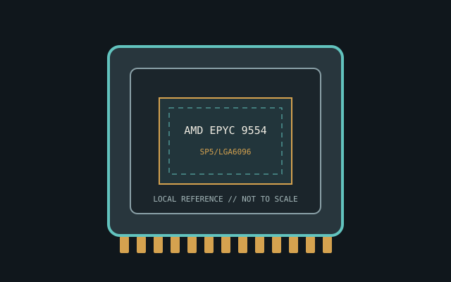

[ INDIVIDUAL CPU COMPONENT ]
AMD EPYC 9554
Zen 4 EPYC 9004, 2022; 64C/128T, 3.1/3.75 GHz, 256 MB L3, 360 W Model-specific record; confirm the complete part marking before installation.

IDENTIFICATION: AMD EPYC 9554. Product name alone does not establish package, stepping, voltage or firmware compatibility.
Verified model specifications
| Catalog path | Amd → EPYC server processors |
|---|---|
| Model and compute | Zen 4 EPYC 9004, 2022; 64C/128T, 3.1/3.75 GHz, 256 MB L3, 360 W |
| Package / socket | SP5/LGA6096 |
| Compatibility | SP5 BIOS, DDR5 ECC RDIMM and thermal design |
| Stepping and variants | 9554 differs from 9554P; verify OPN/board revision |
Compatibility and service
- SP5 BIOS, DDR5 ECC RDIMM and thermal design
- 9554 differs from 9554P; verify OPN/board revision
- Record AGESA/DIMM/power; use correct carrier/torque
- Confirm board manual, exact CPU support list, firmware, voltage/power, memory and cooling before use; never force a package.
Service & archival notes
Record AGESA/DIMM/power; use correct carrier/torque
Photograph package, markings, contacts and date/lot codes before repair. Log host board, BIOS/microcode, memory, cooler, condition, provenance and source revision.
Sources & further reading
- AMD processor specifications — AMD EPYC 9554Manufacturer catalog; search exact model and OPN.
- AMD support documentationManufacturer platform documents; verify motherboard BIOS separately.
Manufacturer documents take precedence. Family-level references may not resolve every stepping; verify the marking and motherboard CPU list.